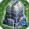
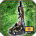
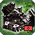
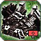
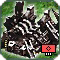
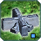
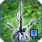

Patch 3676
Welcome to the patchnotes for the 3676 patch.
The focus of this patch is working on improving the implementation of the previous patch. Cybran regen is improved, Seraphim get a buff to their hps, as well as some smaller changes and fixes.
We wish you good luck and much fun playing with the new patch!
-- The Balance Team
Air
 Janus
Janus
Janus gets a slight buff again to improve it slightly vs units.
- Initial Damage:
15→ 20 - Total Impact Damage:
300→ 400 - Total Overall Damage:
1500→ 1600
Structures
 T3 Naval Support Factories
T3 Naval Support Factories
T3 naval support facs were found to be too vulnerable considering the cost of the units being constructed within them so we have reduced their hp nerf.
- UEF HP:
13000→ 17000 - Seraphim HP:
10000→ 15000 - Aeon HP:
10000→ 13000 - Cybran HP:
8000→ 11000 - Cybran HP Regeneration:
15→ 30
T2 UEF Naval Support Factory
This is a correction of the UEF T2 naval support factory which was missed in testing before the previous balance patch.- HP:
6000→ 6500
Mass Storages
Mass storage hp has been given some hp back, so that it is more in line with their cost.- UEF HP:
760→ 1200 - Seraphim HP:
600→ 1100 - Aeon HP:
600→ 1000 - Cybran HP:
500→ 800 - Cybran HP Regeneration:
1→ 4
Seraphim Structures
In the HP nerf patch Seraphim were given the same HP as Aeon. However we now decided to buff their HP so that they have more than Aeon, but still less than UEF. Seraphim have less unit choices and are not one of the stongest factions so some buffs are warranted and this also increases faction diversity.Seraphim T1 Buildings
- Air/Land/Naval Factory HP:
3100→ 3500 - Power Generator HP:
600→ 650 - Hydrocarbon Power Plant HP:
1600→ 1700 - Mass Extractor HP:
600→ 650 - Wall Segment HP:
2000→ 2500
Seraphim T2 Buildings
- Air/Land Factory HQ HP:
6200→ 7000 - Naval Factory HQ HP:
10000→ 11000 - Air/Land Support Factory HP:
3100→ 3500 - Naval Support Factory HP:
5000→ 5500 - Power Generator/Mass Extractor HP:
1900→ 2000
Seraphim T3 Buildings
- Air/Land Factory HQ HP:
12400→ 14000 - Naval Factory HQ HP:
20000→ 22000 - Air/Land Support Factory HP:
6200→ 7000 - Naval Support Factory HP:
10000→ 15000 - Power Generator/Mass Extractor HP:
6200→ 7000
Cybran Structure Regeneration
The initial Cybran regen values were found to be too low to be a relevant feature, so we have increased Cybran regen across the board.Cybran T1 Buildings
- Air/Land/Naval Factory:
3→ 6 - Power Generator/Mass Extractor:
1→ 2 - Hydrocarbon Power Plant:
1→ 6 - Wall Segment:
3→ 6
Cybran T2 Buildings
- Air/Land Factory HQ Regen:
10→ 20 - Naval Factory HQ Regen:
15→ 30 - Air/Land Support Factory Regen:
3→ 6 - Naval Factory Regen:
6→ 12 - Power Generator/Mass Extractor Regen:
3→ 6
Cybran T3 Buildings
- Land Factory HQ Regen:
20→ 40 - Air Factory HQ Regen:
20→ 40 - Naval Factory HQ Regen:
30→ 60 - Air/Land Support Factory Regen:
10→ 20 - Naval Factory Regen:
15→ 30 - Power Generator/Mass Extractor Regen:
10→ 20
Miscellaneous
Wall segments
- Destroying Wall Segments now grants 0.1 veterancy instead of 1. Killing walls for vet was an abuse which became more prevalent since the wall hp nerf.
T2 Radar
We have reduced the maintenance cost of T2 radars to encourage this intel option in the midgame.- T2 Radar energy Mainentance cost:
250→ 200